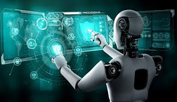

|
Fifth-Generation Computers (now and the future)
Fifth-generation computers are most commonly defined as those that are based on artifi
cial intelligence, allowing them to think, reason, and learn . |
|
|
Artificial intelligence Artificial intelligence (AI), in its broadest sense, is intelligence exhibited by machines, particularly computer systems. It is a field of research in computer science that develops and studies methods and software that enable machines to perceive their environment and use learning and intelligence to take actions that maximize their chances of achieving defined goals. Such machines may be called AIs. |
 |